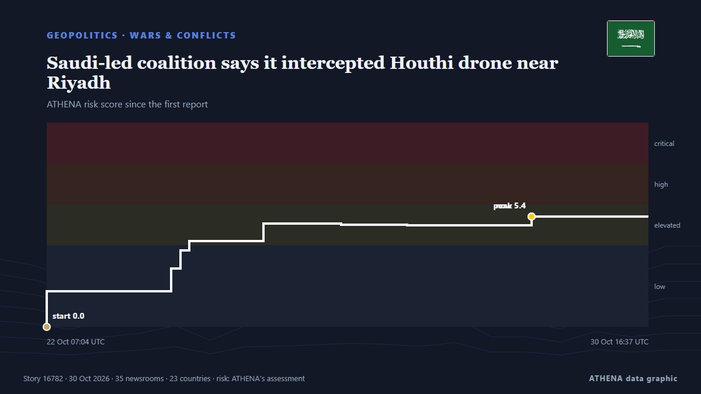

Saudi-led coalition says it intercepted Houthi drone near Riyadh

Riyadh: Saudi forces on Tuesday intercepted a ballistic missile aimed at the kingdom's capital, said a spokesman for the Riyadh-led coalition backing Yemen's government, after auth... von Oman Observer
Unabhängig gemeldet von 35 Medien in 23 Ländern seit dem 20. Okt., zuerst von Oman Observer; die Berichterstattung ist auf dem Höhepunkt. ATHENA stuft das Risiko als erhöht ein (5.1/10), vor allem wegen der Schwere des beschriebenen Schadens und seiner geografischen und sektoralen Reichweite. Die Konfidenz liegt bei 89 % (hoch): 35 Medien bestätigen es unabhängig, bei einer mittleren Verlässlichkeit der Quellen von 77 %. Wer berichtete: 12 Medien in Saudi-Arabien · Saudi Arabia, 6 Medien in Pakistan, 4 Medien in Türkei · Turkey. Die Berichterstattung lief von 20. Okt. bis 25. Okt., über 116 Stunden.
Warum es wichtig ist: Das Rote Meer und die Meerenge Bab al-Mandab sind der kürzeste Seeweg zwischen Asien und Europa durch den Suezkanal. Angriffe auf Handelsschiffe zwingen Reedereien um Afrika herum – mit mehr Zeit und Kosten für den Welthandel.
Was sich geändert hat: 5 neue Berichte von 3 Redaktionen in den 24 Stunden bis 31. Okt..
Erste Schlagzeile: Saudi-Led Coalition Says It Intercepts Iran-Backed Houthi Ballistic Missile Targeting Riyadh
Schlagzeilen werden auf Englisch angezeigt, wie veröffentlicht.
Auf einen Blick
Ausgewählt, bewertet und geschrieben nach der veröffentlichten Methodik von ATHENA. Kein Redakteur greift in einzelne Ereignisse ein. So entsteht ATHENA ›
| 20 Oct 05:10 UTC | 3 |
|---|---|
| 20 Oct 17:10 UTC | 2 |
| 21 Oct 05:10 UTC | 0 |
| 21 Oct 17:10 UTC | 3 |
| 22 Oct 05:10 UTC | 5 |
| 22 Oct 17:10 UTC | 9 |
| 23 Oct 05:10 UTC | 1 |
| 23 Oct 17:10 UTC | 9 |
| 24 Oct 05:10 UTC | 10 |
| 24 Oct 17:10 UTC | 11 |
| 25 Oct 05:10 UTC | 13 |
| 25 Oct 17:10 UTC | 12 |
| 26 Oct 05:10 UTC | 10 |
| 26 Oct 17:10 UTC | 14 |
| 27 Oct 05:10 UTC | 3 |
| 27 Oct 17:10 UTC | 3 |
| 28 Oct 05:10 UTC | 0 |
| 28 Oct 17:10 UTC | 6 |
| 29 Oct 05:10 UTC | 3 |
| 29 Oct 17:10 UTC | 5 |
| 30 Oct 05:10 UTC | 5 |
| 30 Oct 17:10 UTC | 0 |
| 31 Oct 05:10 UTC | 2 |
| 22 Oct 07:04 UTC | 0.0 |
|---|---|
| 22 Oct 07:08 UTC | 1.7 |
| 24 Oct 00:44 UTC | 2.9 |
| 24 Oct 03:51 UTC | 3.7 |
| 24 Oct 06:46 UTC | 4.2 |
| 25 Oct 07:38 UTC | 5.0 |
| 26 Oct 09:47 UTC | 5.0 |
| 27 Oct 07:53 UTC | 5.0 |
| 29 Oct 01:28 UTC | 5.4 |
| 31 Oct 08:04 UTC | 5.1 |
Warum diese Zahlen
Bedeutung
Risiko
Konfidenz
Die Berichterstattung – wer berichtete, und wann
Schlagzeile wie veröffentlicht · öffnet das Original- Oman Observer · OmanSaudi force intercept ballistic missile targeting Riyadh
- Arab Times · KuwaitSaudi-Led Coalition Says It Intercepts Iran-Backed Houthi Ballistic Missile Targeting Riyadh
- Asharq Al-Awsat (English) · Saudi-Arabien · Saudi ArabiaCoalition Says Intercepted Ballistic Missile Targeting Riyadh
- Arab Times · KuwaitSaudi-led Coalition Intercepts Four Drones Targeting Kingdom
- Asharq Al-Awsat (English) · Saudi-Arabien · Saudi ArabiaCoalition: Drones Launched Toward Saudi Arabia Intercepted, Destroyed
- Middle East Eye · INTSaudi-led coalition says four drones intercepted and destroyed in Eastern Province
- Anadolu Agency (English) · Türkei · TurkeySaudi-led coalition intercepts 4 drones over eastern Saudi Arabia
- Dawn · PakistanSaudis intercept more drones as conflict with Houthis spirals
- China Daily — page reader · ChinaDrones intercepted over Riyadh, other regions: Saudi-led coalition
- Anadolu Agency (English) · Türkei · TurkeySaudi-led coalition intercepts, destroys drone in Riyadh region
- Asharq Al-Awsat (English) · Saudi-Arabien · Saudi ArabiaCoalition: Four UAVs Intercepted and Destroyed in Riyadh and Madinah Regions
- Middle East Eye · INTSaudi-led coalition claims drone downed over Riyadh
- Saudi Gazette · Saudi-Arabien · Saudi ArabiaCoalition intercepts 9 UAVs in Madinah, Riyadh, and Eastern Province
- Arab News · Saudi-Arabien · Saudi ArabiaHouthi claims about tribal gathering threats are ‘completely baseless,’ coalition says
- Middle East Eye · INTSaudi-led coalition says it intercepted two Houthi drones targeting Saudi Arabia
- Express Tribune · PakistanYemeni army says over 35 Houthi fighters killed or wounded in Taiz
- Anadolu Agency (English) · Türkei · TurkeySaudi-led coalition says it intercepted 11 Houthi drones and a ballistic missile
- Middle East Eye · INTAlerts issued in Saudi Arabia's Riyadh and Najran, Saudi-led coalition says Houthi missiles intercepted
- Arab News · Saudi-Arabien · Saudi ArabiaCoalition air defenses down missiles bound for Riyadh, Khamis Mushait amid ongoing Houthi attacks
- Asharq Al-Awsat (English) · Saudi-Arabien · Saudi ArabiaCoalition Destroys Ballistic Missile, Drones, Denies Houthi Claims about Saudi Threats Against Tribal Gatherings
- Saudi Gazette · Saudi-Arabien · Saudi ArabiaSaudi air defenses intercept Houthi missiles targeting Riyadh, Khamis Mushait
- Asharq Al-Awsat (English) · Saudi-Arabien · Saudi ArabiaTwo Houthi Ballistic Missiles Intercepted Over Riyadh, Khamis Mushait
- Express Tribune · PakistanSaudi-led coalition says it destroyed Houthi ballistic missiles fired towards Yanbu, Taif
- Arab News · Saudi-Arabien · Saudi ArabiaCoalition forces down missiles and drone as Houthis keep up strikes on Saudi Arabia
- Middle East Eye · INTSaudi-led coalition says ballistic missile aimed at Riyadh destroyed
- Gulf News · Vereinigte Arabische Emirate · United Arab EmiratesMiddle East war: US prepares fresh strikes on Iran; Houthi missile targets Riyadh; Tankers hit mines near Hormuz
- TASS (English) · Russland · RussiaArabian coalition shoots down Houthi ballistic missile over Riyadh
- Xinhua (English) — page reader · ChinaSaudi-led coalition says intercepts Houthi ballistic missile targeting Riyadh
- Shafaq News (English) · Irak · IraqSaudi-led Coalition strikes Saada, Taiz
- Business Recorder · PakistanTwo explosions heard in Riyadh following alert
- Oman Observer · OmanBallistic missiles targeting Saudi cities intercepted
- Middle East Eye · INTMorning update
- Middle East Eye · INTSaudi-led coalition says it destroyed Houthi ballistic missiles fired towards Yanbu and Taif
- Anadolu Agency (English) · Türkei · TurkeySaudi-led coalition says it intercepted 2 Houthi ballistic missiles targeting Saudi cities
- Asharq Al-Awsat (English) · Saudi-Arabien · Saudi ArabiaSaudi Arabia Intercepts Three Missiles Targeting Riyadh, Taif and Yanbu
- APA (English) · Aserbaidschan · AzerbaijanSaudi-led coalition says it intercepted 2 Houthi ballistic missiles targeting Saudi cities
- Business Recorder · PakistanSaudi forces say intercepted two Houthi missiles targeting Yanbu, Taif
- Saudi Gazette · Saudi-Arabien · Saudi ArabiaAir defenses intercept Houthi ballistic missiles targeting Taif, Yanbu
- Al-Monitor · Vereinigte Staaten · United StatesSaudi Arabia intercepts drones and missiles as fighting with Yemen's Houthis continues
- Express Tribune · PakistanSaudi Arabia says two injured by falling debris from intercepted Houthi missiles